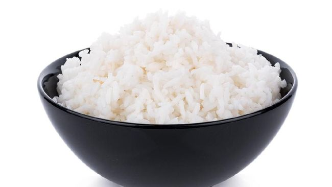

Tutorial Memasak Nasi

Tidak dapat dipungkiri bahwa nasi merupakan makanan pokok manusia
di benua Asia. Namun, belum banyak yang mengetahui cara memasak nasi
dengan benar.
Alat dan Bahan :
-
Beras
- Cangkir Takar
- Penanak Nasi
- Piring
Langkah Pembuatan :
-
Ukur beras dengan cangkir takar, dan masukkan ke dalam panci penanak nasi Anda.
-
Cuci beras jika perlu.
-
Ukur air.
-
Rendam beras selama tiga puluh menit kalau suka.
-
Tambahkan perasa (sesuai selera).
-
Masukkan butiran beras yang menempel di dinding panci masuk ke dalam air sehingga semua beras terendam sepenuhnya,
jangan sampai ada yang tercecer.
-
Periksa penanak nasi Anda untuk menyalakan pilihan atau pengaturan khusus.
-
Masak nasi dalam penanak nasi.
-
Biarkan nasi selama 10-15 menit sebelum membuka tutup penanak nasi (pilihan).
-
Aduk nasi agar tidak padat dan menggumpal, dan sajikan.